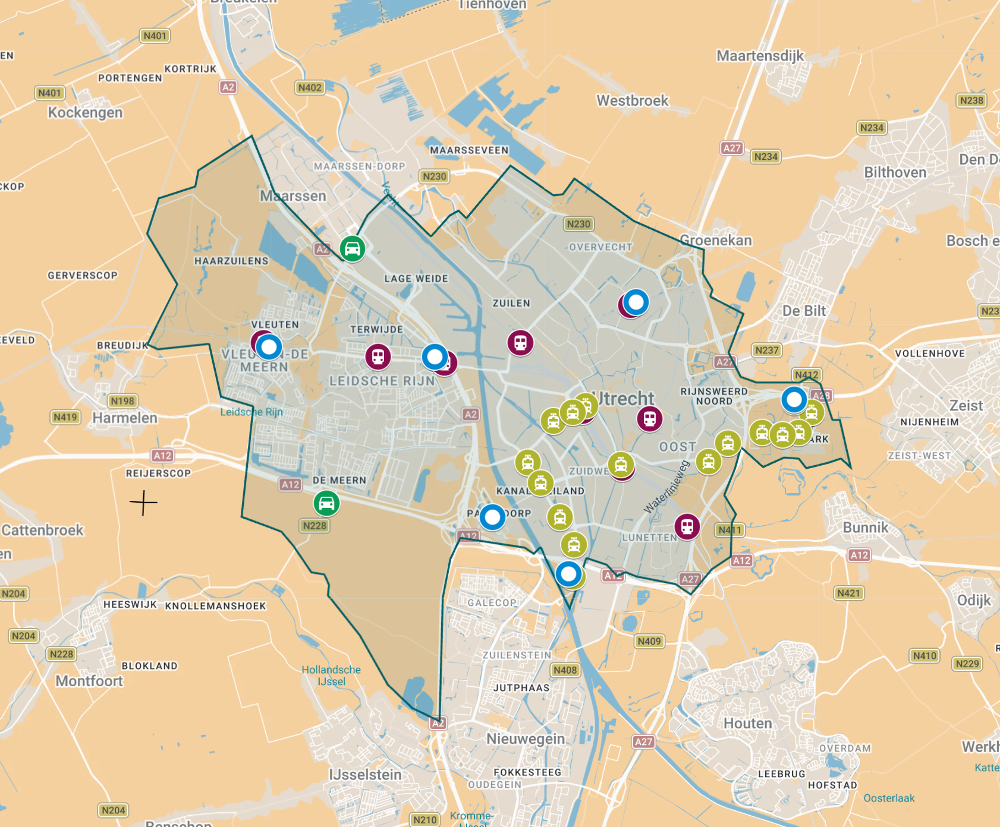
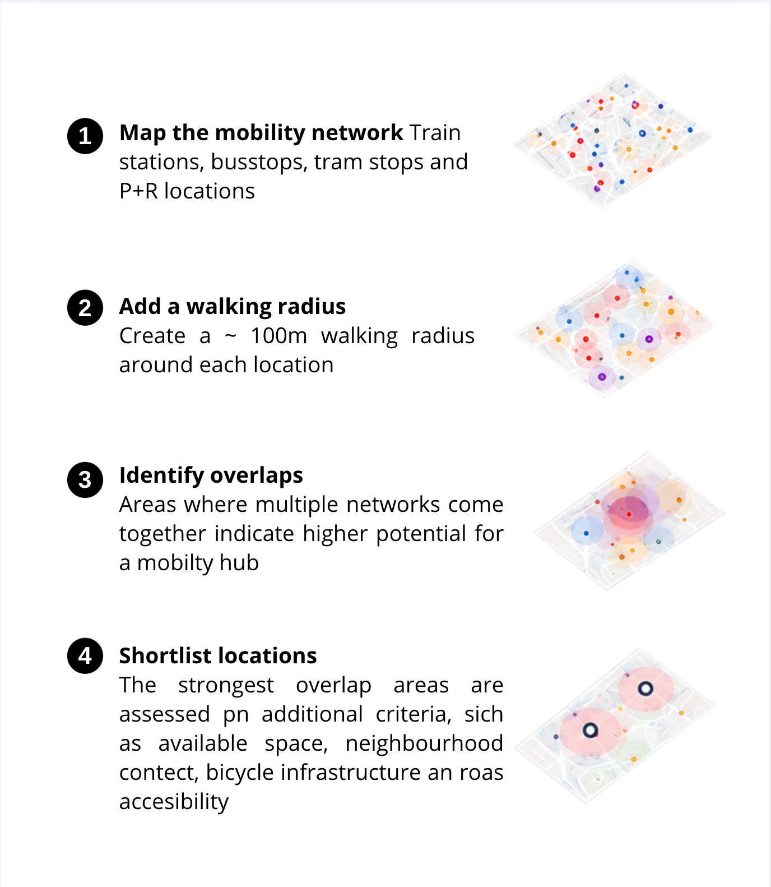

Mobility Hub research for Municipality of Utrecht
For the Municipality of Utrecht, I designed and carried out a spatial research method to identify suitable locations for pilot mobility hubs.
Using Google Maps and hand-drawn maps, the research focused on public transport connections, walking distances, and opportunities to connect different modes of transport. The method was developed as a clear, step-by-step process, making the analysis transparent and easy for the municipality to follow.
By combining these findings with additional spatial and accessibility criteria, the team selected three promising locations for pilot mobility hubs. The results contributed to a broader advisory report for the municipality.


